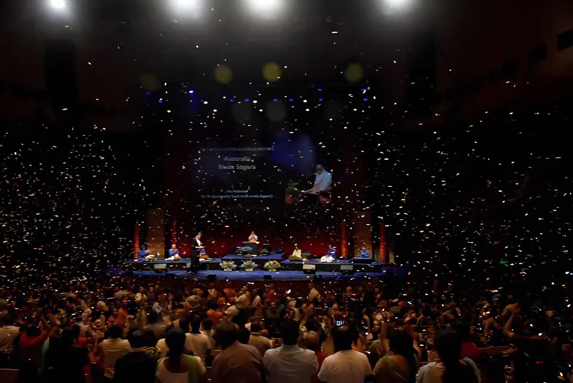
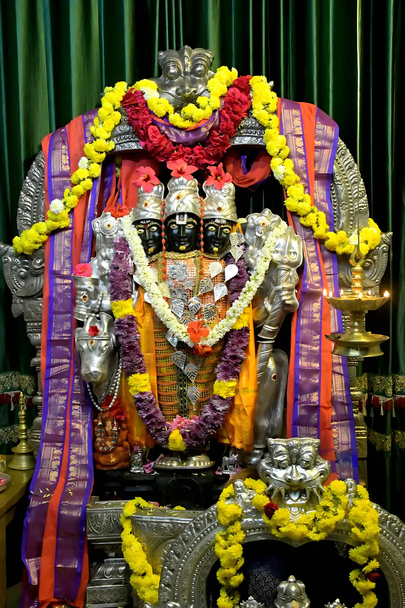
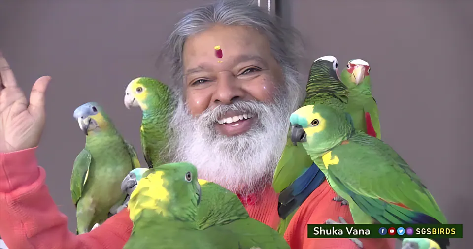
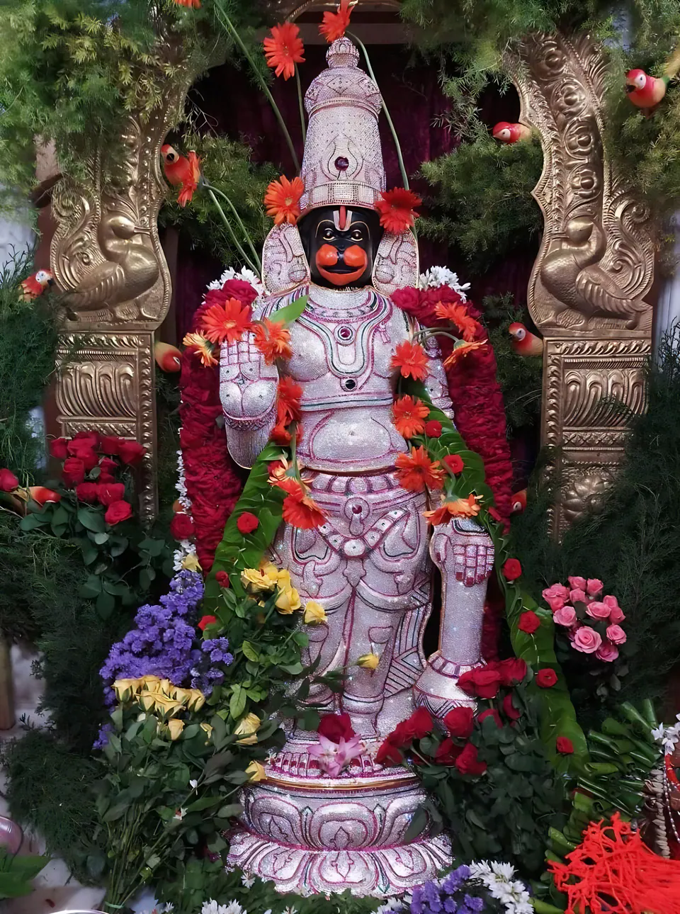
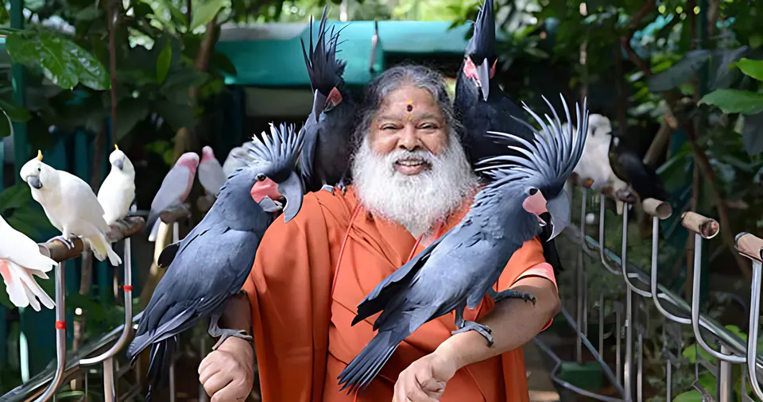
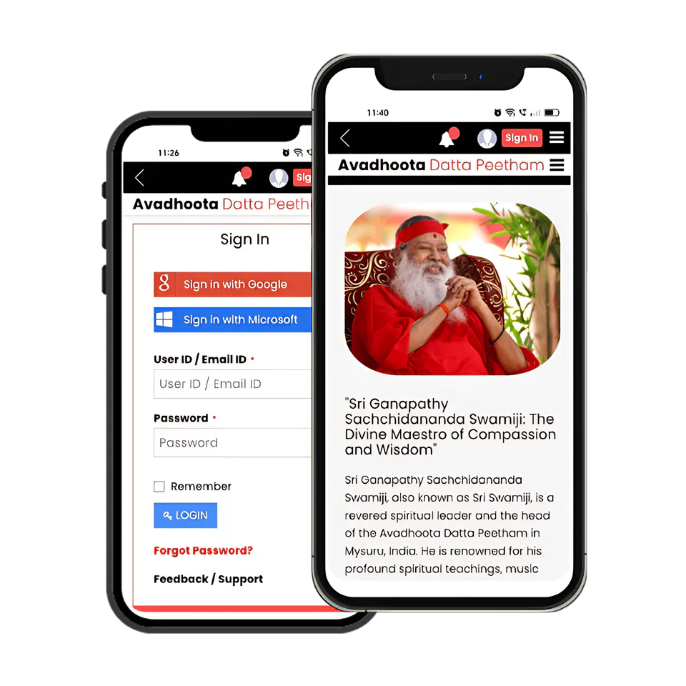

Media & Teachings
Discourses and films, healing music and bhajans, books, photographs and apps from Avadhoota Datta Peetham, gathered in one place.
The Peetham’s media at a glance
Sri Swamiji teaches and heals through music, speeches, stories, jokes and poems.
From the life of Sri Ganapathy Sachchidananda Swamiji · dattapeetham.org
- 515
- Videos on YouTube
- 2,971
- Videos on Vimeo
- 980
- Photographs
- 67
- Free downloads
- 18
- Peetham apps
Counts from the Peetham’s official archive at dattapeetham.org, October 2026.
Watch the living tradition
Discourses, healing music and the birds of Shuka Vana, as shared on dattapeetham.org. Choose a film and it plays right here.
Now showing 01 / 10
Sri Swamiji Unveiled
Sri Swamiji reaches people through public programmes, house visits, television, radio, books, CDs and DVDs. This film is shared on his life story at dattapeetham.org.
- Sri Swamiji Sri Swamiji Unveiled
-

Healing music · 2015 Australia Naada Sagara -

Discourse · Telugu Datta Charitram · Episode 1 - Shuka Vana · 4:41 The amazing Vana of Shuka Vana
-

Shuka Vana Varam the parrot chants the Hanuman Chalisa’s first line -

Parayana Hanuman Chalisa Parayana by Sri Swamiji (40 times) -
 Nada Mantapa
Glimpses of Nada Mantapa’s construction
Nada Mantapa
Glimpses of Nada Mantapa’s construction
-

Nature Sri Swamiji with birds & animals -
 Sri Bala Swamiji
Mekedatu Padayatra
Sri Bala Swamiji
Mekedatu Padayatra
-
 Sri Bala Swamiji
Ganga Stotram
Sri Bala Swamiji
Ganga Stotram
Datta Charitram
Discourses by Sri Swamiji on “Datta Charitram” in the Telugu language, shared on the Peetham’s page about Adi Guru Dattatreya. Each episode plays in the screen above.
Video albums
The Peetham’s own collection: 515 YouTube videos and 2,971 on Vimeo, gathered into albums at dattapeetham.org.
Listen in stillness
Sri Swamiji has composed more than 3,000 bhajans in Sanskrit, Kannada, Telugu, Tamil, Marathi, Gujarati, Hindi and English. Begin with a chant, or stream the Raga Sagara albums.
108 – Om Aim Hreem Shreem Shiva Rama Anagha Dattaaya Namaha
0:00MP3
Albums to stream
- Sri Aditya Raga SagaraLive in Auckland Spotify Apple Music
- Atma Shanti Raga SagaraLive at Carnegie Hall Spotify Apple Music
- Mauna Dhyana Raga SagaraLive in Davos, feat. L. Subramaniam Spotify Apple Music
- Sachchidananda Vadya VaibhavamInstrumental Spotify Apple Music
- Raga SagaraLive in Hyderabad, 2 April 2006 Spotify Apple Music
- Bhajans & Healing MusicSri Swamiji’s bhajans, on dattapeetham.org
- Bhajan lyricsWords for singing along, at bhajanmala.com
- Sri Swamiji on SpotifyThe full catalogue to stream
- Sri Swamiji on Apple MusicAlbums on iTunes and Apple Music
How healing music works, the Raga Sagara concerts and the Nada Mantapa: Nada Chikitsa — Healing through Music
Words to carry home
Sri Swamiji reaches people through books and the monthly Bhaktimala as well as through music. Read them in print, as free downloads, or in the Peetham’s articles and speeches.
- Bhakti Mala A Garland of Devotion English April 2020 PDF · 922 KB
- Bhakti Mala A Garland of Devotion Kannada April 2020 PDF · 1.13 MB
- Bhakti Mala A Garland of Devotion Telugu September 2020 PDF · 2.39 MB
Bhaktimala, a garland of devotion
The Peetham’s monthly magazine began in 1976 and is published in seven languages. Its name means “a Garland of Devotion”. Issues from 2020 in English, Kannada and Telugu are free to download.
- Bhakti Mala · English · April 2020PDF · 922 KB
- Bhakti Mala · Kannada · April 2020PDF · 1.13 MB
- Bhakti Mala · Telugu · September 2020PDF · 2.39 MB
The Bhakti Mala video album holds 92 films. Watch them on dattapeetham.org.
Books from the Peetham
Besides composing keertanas and bhajans in many languages, Sri Swamiji has penned books on spirituality, chiefly in Telugu and Kannada. Scholars associated with the Peetham have translated his texts into other languages, and some have authored books of their own under its aegis. The Peetham lists 168 published titles in Kannada, Telugu, English, Hindi, Marathi, Tamil, Gujarati and Sanskrit.
- Datta SpeaksEnglish
- Sri Datta DarshanamTelugu
- Reflections of the AbsoluteEnglish
- Raga Ragini Nada YogamEnglish
- Sri Guru GitaMarathi
- Fifty Golden Years With My GuruEnglish
- Kavacha ManjariKannada
- Tripura RahasyamTelugu
- The Mystery of Sri ChakraEnglish
- Sadguru SapthashatiHindi
- Yoga DarpanaEnglish
- Datta DarshanaGujarati
- Shiva KathamruthaTamil
- GomataEnglish
- My BonsaiEnglish
- Srimad Bhagavad-Gita Chanting BookSanskrit
Books are sold at the Raga Ragini Book Store in the Mysuru Ashram and some branches of the Peetham, and online.
Free to read, print and share
Sixty-seven files on dattapeetham.org: puja vidhis, stotrams, invitations, music and back issues of Bhakti Mala, the Peetham’s magazine.
- Anagha Vratam
- Bhajana Yogam 1–4
- Bhajans
- Bhakti Mala
- Chaturmasya
- Datta Mala
- Documents
- Dwadasa Sukthi Manjari
- Healing Music
- Invitations
- Music
- Photos
- Prayers
- Stotram
- Videos
Read the teachings
- ArticlesCultural, religious and spiritual articles from His Holiness Sri Ganapathy Sachchidananda Swamiji.
- SpeechesSpeeches of Sri Swamiji and Sri Datta Vijayananda Teertha Swamiji: Datta Vaakya and Vijaya Vyakhya.
- Sri Swamiji SaysDaily messages of culture, religion and spirit from Sri Swamiji.
- Discourses & wisdomThe Peetham’s teachings, gathered on this site.
Darshan in pictures
Temples, gardens and the seva of the Peetham. Select any photograph to see it full size.
Official photo albums
The Peetham’s archive holds 980 photographs, with albums from its centres in Canada, Germany and Switzerland and the Proddatur Ashrama.

Eighteen apps from the Peetham
Store links open Apple’s App Store; seven of the apps are also made for iPad. The Peetham keeps the full list at dattapeetham.org/mobileapps.
- Datta Peetham App Store
- Hanuman Chalisa App Store
- Bhajan Mala App Store · iPad
- Guru Gita App Store · iPad
- Vishnu Sahasranamam App Store · iPad
- Lalita Sahasranama App Store · iPad
- SGS Bhagavad Gita App Store · iPad
- Kavacha Manjari App Store · iPad
- Shatashloki Ramayana App Store · iPad
- SGS Panchangam App Store
- Datta Kriya Yoga App Store
- SGS Gita Tutor App Store
- SGS Vedas App Store
- SGS Satsang App Store
- SGS Ramayan App Store
- Walk Mantra App Store
- Vaakya App Store
- SGS Datta Venu App Store
Never miss a programme
Subscribe to notifications from the Peetham, or keep the Ashram close with the Datta Peetham app.
Follow, subscribe, tune in
The Peetham’s official pages and channels, and the television timings of Sri Swamiji’s programmes.
YouTube
9 channels5 more
Facebook
14 pages10 more
Instagram
7 accounts3 more
X
4 handlesListed on the Peetham’s Social Media Pages.